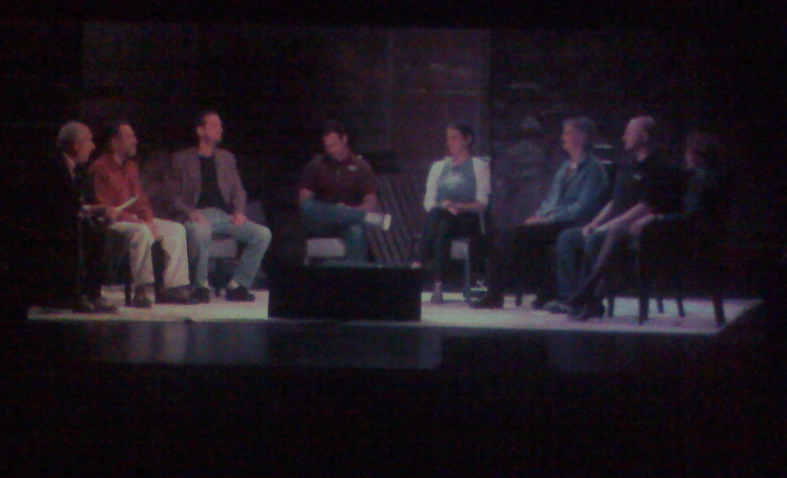

As the lights came up in the nearly empty theater I was sitting in, I felt like I had just seen a documentary made by a charmingly geeky executive formally of Mike’s Hard Lemonade who is allergic to alcohol. Now to be fair at the top, I give Anat Baron kudos for putting the time and effort into this project, after all, it’s good for the American Craft brewing industry, and we’re all interested in promoting the little guys, but c’mon, 3 years to put this thing together??
Let’s start with the positives. The limited cast of characters, Sam Calagione, Greg Koch, Jim Koch, Kim Jordan, Rhonda Kallman, Charlie Papazian, and Maureen Ogle were a good choice. I especially liked Rhondas story as I think what she is going through now, is reflective of what many of the American craft brewers are going through daily. I also very much enjoyed the interviews with the “villains” of the industry and the corporate video clips showing how they plan to cut the competition away like fat on a steak – nice work getting that footage! It will be interesting to see that if AB can slap a law suit on Dogfish Head over the use of the words “Chicory” and “Punk’n”, that they wont slap a law suit on Anat Baron for using their image and footage in her film, signed releases or not.
I’m certainly not a film snob, and like we always say on Beer America TV, taste is subjective, that’s why we don’t rate beer, but this film was preaching to the choir and offered very little in the way of new information to those who know anything about the beer industry
. After the first hour, I found myself looking at my watch wanting to know how much longer it was going to continue. The movie was called Beer Wars, I wanted more juice, more controversy, more conflict, more interviews like the brewer at AB who insists that he is brewing top quality beer. I wanted a fat juicy steak, but I got an ordinary hamburger instead.
After sitting through this film and Ben Stein’s babbling moderation after it was over, I felt like I had just consumed an ice cold Bud Light – unsatisfied and ripped off for spending $15 on that 18 pack! With all the hype going into this film, maybe I set my expectations to high, but in the end, I pretty much got what I expected.
What did you think? Agree with me or not, I want to know how you felt about it, after all, the point was to “get the conversation started” right? Let me know what you think, did I miss something?
Paul
Video BrewMaster
www.BeerAmerica.TV


13 Responses
Maybe there was something missing – or maybe what you found missing is just another example of the problem. The 900lb. gorilla that is Anheuser-Busch had no real interest in this project, other than to try to convince the beer geeks in the audience that really, they make good beer, just give ’em a chance. For its public face, A/B is going to essentially ignore independent brewers – to admit they exist is to admit that they are competition (even if on a small scale). The independent brewers don’t want to fight the 900lb. gorilla, they’d just like it to let go of their ankles.
On the plus side, the movie converted at least one new person to the cause. I took my niece, a newbie beer drinker – new enough that she still thinks Coors is quality beer. (On the plus side, she’s decided that Sam Adams is good stuff.) By the time the movie was over, she had announced that she just can’t drink anything by “those people” any more – it’s just not right. Fight “The Man!”
Posted on April 17th, 2009 at 11:09 am
Good thoughts! Beer Wars was certainly good for the American Craft brewing industry, no question in that, I just strongly felt that the film in general missed an opportunity to be really great. If the film was of higher quality in both content and production, I think more people would be inclined to sit through it, therefor reaching a wider audience in the end.
Posted on April 17th, 2009 at 11:19 am
Perhaps the live venue was better. I was at the live event UCLA, and – although I wouldn’t call the atmosphere “electric” – it was ripe with anticipation. Royce Hall was pretty-well packed (yeah, there were ushers directing people to sin in the middle “reserved” section, which was roped-off at first) and there seemed to be good and spontaneous reaction to the film. Sometimes seeing a movie is a packed theater is better than seeing a matinee at the local cineplex on a Tuesday afternoon. I found that to be the case with the live version of “Beer Wars”. It was an “event”.
As for the movie…I’m a beer geek, sometime home-brewer, I’m fifty-plus years old and I know what I like (I’m a fan of Stone and Dogfish both…and seeing Sam and Greg, two of my heroes, on the “big screen” was cool!) – – but I have to admit that I was painfully ignorant of the power of the Washington D.C. beer-lobby and the “three-tiered” distribution system as well. The film was educational for me…and I imagine that it was for many other people as well.
Was it the “Ben Hur” of beer movies? “Citizen Kane”?? Hardly. But I think that it was well-done, well-edited, had good pace from beginning to end… and I was never bored. I laughed, I got a lump in my throat during the scene when Ronda left her kids for yet another marketing trip…(I’m an old softy!)
The staging for the live panel was well-done – I’m not sure how it came off on a movie-screen…
Now…to be honest, I found the panel discussion to be just a yawning re-hash of the movie I had just seen. No new info was given…I am a Ben Stein fan (usually…I was actually on his show “Win Ben Stein’s Money” back in the day…) – but his lame questions and lack of passion was….well…a downer. “Bueller….Bueller….??” Perhaps he was not a good choice after all. Personally, I would have liked to hear more from Todd Alström – what those of you could *not* see (those who were not there in the live venue) was the off-camera director giving Ben Stein the “hurry-up, move-it-along” sign as the panel was wrapping up…and Todd was not given the opportunity to defend his statement that Ronda’s “Moonshot 69” was “&!$$.”
All-in-all – I was glad I went. Let the discussion begin!
Posted on April 17th, 2009 at 11:21 am
Couple of things, the brewer at AB is brewing top quality beer, just to a style that has little to no flair or ability to wake the senses and make a drinker say HOT DAMN! Or to Greg Koch’s point, the beer speaketh and says I am Arrogant Bastard.
Flew under the rader I bet to some, but I could not miss the irony in the dig that Anat pulled on AB while at the GABF a few years ago that was in the film. As they panned through the AB booth and talked about the lack of interest in their “non-real” or “artificial” craft beers, there was Mitch Steele, now head of brewing facitilies for…drum roll Stone Brewing. Mitch used to be the “evil” director of craft/new market segment for AB before joining Stone. Not trying to dig on Mitch at all, put “evil” in quotes on purpose, I am sure he is a totally fantastic guy and I also firmly believe Stone’s product has actually improved since he arrived. Just a very ironic moment of crossing the streams.
Things I think lost on the audience, documenatries are terribly difficult to make, especially about a topic in which perhaps only a very small audience will have budding interest. The movie was “Beer Wars” not “Craft Beer Wars”, I think it is somewhat clear where Anat leans on the topic, but to make an interesting story it needs to be focused and have a point.
The way I look at it, Beer Wars is a reall good introductory to someone who is not a beer geek and would be unlikely to read Ambitious Brew by Maureen Ogle.
I think the average person, and even some that like Craft Beer likely assume that someone like Sam’s life must by super and just filled with endless moments of fun, but it comes with huge risks, huge family tolls and a damn lot of effort.
Posted on April 17th, 2009 at 11:23 am
Couldn’t tell you. I was one of those of many that the theaters couldn’t get a satellite feed so we were told sorry, it isn’t going to happen tonight. All the hype, the pre-buying tickets, the wait and then the let down. BTW, in Baton Rouge there were maybe 15 people in the theater. Must be why the theater didn’t make an effort to get the feed fixed.
Posted on April 17th, 2009 at 6:23 pm
Well… I have to say that the event was great in Randolph, Ma (south of Boston).
We got there about 25 minutes before the film started. Got talking to another home brewers and BSed for awhile about beer. We sat in the Lux Level of our theater…So they have a full menu of food and Beer… and even had a special beer list for the night
DFH 60 Min IPA
Stone Pale Ale
Stoudt’s American Pale (they didn’t have any when I asked)
Moonshot 69 (which I didn’t try)
So we ordered some beers… the movie started right on time… and looked great…
About the movie:
It was what I thought it would be… which means I liked it…. it was a documentary about the business of beer… and how the Big 3 (now really Giant 1 and Wannabe 1) rape and pillage the beer industry…. I think that it portrayed Sam from DFH as a great guy, which he is, and made me love his beer, brand, and company overall more than I did before the movie started. I think that it made Rhonda, from Moonshot, look bad. She looked more like she was trying to get on someone else’s coattails and just looking to make money and not good beer. I really think what Todd Alstrom said in the post movie event was true… She is not craft beer… she is anti-craft beer, but I think that she doesn’t want to be craft beer… She wants to sell her product to InBev or MillerCoors and make lots of money… and Craft beer isn’t just about money. I think that it did a good job of what it was supposed to do… I think as Craft beer fans… we wanted it to be just about how great small breweries like Stone and DFH and others are… But that was not what the movie was about… it was about how the industry is controlled by a few powerful people that are not in beer for beer… but for big business… So I think that the movie did what it was supposed to do… Show Inbev as the bullies on the playground that they are….
The post movie event with the interviews was pretty cool… I think that I only think that cause one of the 2 Twitter submitted questions was mine… It was cool to hear Ben Stein say my name… but man… Ben Stein was not very good.. and I think that it was unfortunate that Anat didn’t get to talk much… But when she did I thought it was profound…. I hope that when it comes out on DVD they put the interviews on it….
Charlie P was great… and I think that they really failed to Thank Him for all that he has done to really create this craft industry… I am one of the beer geeks that thinks that we would still be drinking Bud, Miller, and Coors if Charlie hadn’t come along and really helped push these HomeBrewers to Micro Brewers… and helped develop a place for them in today’s beer Market… So Thank You Charlie!!!
I thought the movie was aces. It really shined a light on AB to show how it isn’t about the beverage… it is about the $$$. And if it comes out on DVD I hope that you get a chance to see it or buy it… two thumbs up… I think that doc did what it set out to do…
Posted on April 17th, 2009 at 6:23 pm
[…] was packed with a good amount of information. There are already reviews plying around the internet. Most of these are talking bad about the movie. I want to bring one point to mind: audience. If you are writing for a beer […]
Posted on April 17th, 2009 at 9:04 pm
[…] BeerAmerica.TV: Beer Wars, did I miss something? […]
Posted on April 17th, 2009 at 9:40 pm
I was pretty satisfied with the film. What surprised me most is how much my wife, who isn’t a big beer person, liked the film. She probably learned a lot more then I did but I still feel like i got a lot out of it. I found Rhonda to probably be the most interesting person in the film too, but not because of the beer she was making. Sure there probably could of been more info but what do you put in a hour and a half and what do you leave out? DVD will probably have a lot more.
Posted on April 18th, 2009 at 9:45 am
I guess it’s like I always say, taste is subjective! I do feel this doc was way to much about the director, I think she could have pulled herself out a little more. It’s funny the reaction Rhonda gets, people either really liked her in the movie or really hated her.
Posted on April 18th, 2009 at 9:17 pm
At least it started a conversation which was the whole point.
I went out and made a film about a subject I care about. And my hope is that it gets people outside the craft beer world to start thinking about the choices they make, like TheBeerLady’s niece.
Posted on April 25th, 2009 at 8:43 pm
Thank you Anat for taking the time to comment on my post! I give you huge props for exactly doing that, I hope I made that somewhat clear in my post. My concern was that your audience was the choir, mostly made up of beer geeks, bloggers, and beer lovers – I worry a bit that the “Bud” crowd will never watch this film. (by the way, I thought a high point in your film was the blind taste test) As a long time TV producer, I might be a little more critical then most, regardless, you managed to get this on over 400 movie screens – that alone is an accomplishment.
I hope we cross paths someday and I have an opportunity to meet you in person for an interview on Beer America TV – going to the GABF? Maybe we’ll see you there. Best to you and I hope this leads to that very conversation you are trying to start!
Posted on April 25th, 2009 at 9:00 pm
Here’s what a nerd I am. Until this article spelled out Punk’in, I totally thought the point of that name was like Pun-Kin (like, family member of a play on words), as opposed to focusing on the Punk angle…
Hah, good times…
Posted on April 29th, 2009 at 12:48 pm